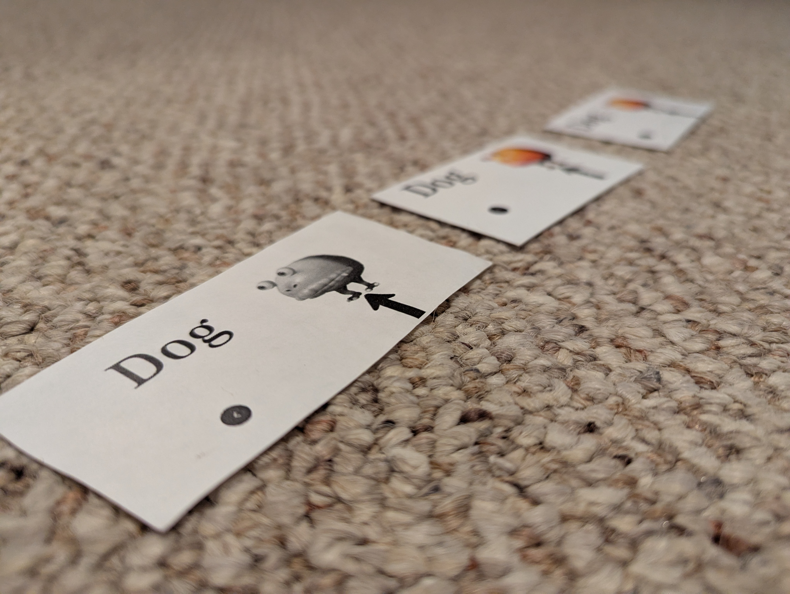

The Dog has had a long history to get to where they are today. Here is a brief summary:
First Print - February 2024
Around the middle of February 2024, the first versions of the Dog card were printed. It was orginally a screenshot taken on Jerome's school laptop that he found funny. They printed exactly 30 copies, about the size of a business card, all in black and white. All but 1 was distributed. The one undistributed is still in Tyce Xiong's posession.
Dog Day - February 27, 2024
This marks the day that the first major print of cards was finished. The order of 500 cards was picked up by Jerome Kawleski, with 250 handed over to Tyce Xiong. The majority of these cards were distributed within SPASH, but many have made their way into the greater community of Stevens Point.
Return of the Dog - April 2024
The exact date of this second major order is not known. There were 1000 cards ordered, increasing the total cards printed to 1530. It is currently under investigation as to what the exact date was, which may be uncovered with a copy of the order confirmation.
Official Sports Team Mascot - June 7, 2024
The Wacky Racers Track Club set the Dog as their official mascot. Due to copyright concerns, they decided that their logo would be an edited version of Jerome Kawleski's rendition of the Dog.
First Mention - June 30, 2024
There was one post on the Stevens Point Area Happening Now V2 Facebook group mentioning the card. This was a major leap forward, as it prooved that there were now people outside of the high school who were finding joy in finding the Dogs that had been distributed.
First Official Competition - July 25, 2025

The Wacky Racers after competing in the 4x400m relay at the Rosholt Distance Classic.
Left to Right: Tyce Xiong, Samuel Enders, Andrew Dziak
The Wacky Racers competed in the Rosholt Distance Classic as their first official meet since changing their mascot. They were represented by Tyce Xiong, Samuel Enders, and Andrew Dziak. All three athletes competed in both the 5000m run and 4x400m relay.